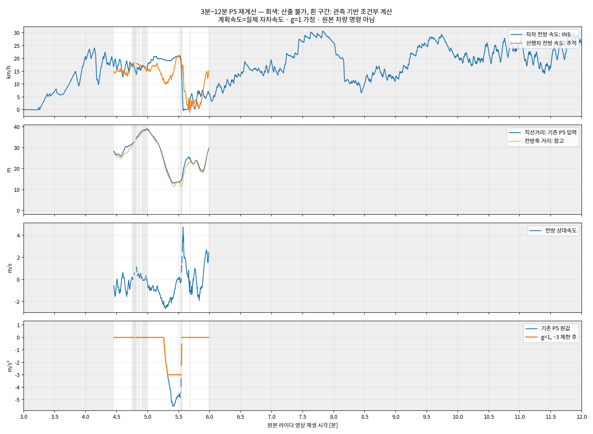

실제 차량 명령 기록이 아닙니다. 실제 자차속도를 계획속도로 사용하고, 선행차를 신뢰한다는 조건 g=1, F1=0으로 기존 P5를 계산했습니다. 미추적·예측만 유지·초기화 구간은 산출 불가(—)이며 브레이크 0이 아닙니다.
자차속도는 GNSS/INS, 선행차는 04:26에 수동 지정한 라이다 추적 결과입니다. 속도 비교는 자차 전방축 성분 기준이며 곡선에서는 선행차 자체 속력과 다릅니다. 기존 P5는 선행차 등속 예측을 사용하므로 가속도 추세는 CSV 참고 열에만 남겼습니다.
자차 평균은 전체 구간, 선행차·거리·P5 통계는 산출 가능한 표본만 사용합니다. 거리 기준은 라이다 중심→관측 표면 직선거리이며 범퍼 간격·경로상 거리가 아닙니다. 같은 주행 경로의 제어 대상인지도 별도 검증이 필요합니다. 단위는 속도 km/h, 상대속도 m/s, P5 m/s²입니다.
10Hz 전체 CSV · 10초 집계 CSV · 주요 시점 CSV · 조건·요약

| 영상 구간 | 자차 km/h | 선행차 전방 km/h | 거리 m | 상대속도 m/s | P5 원값 최저 | 제한 후 평균 | 제한 후 최저 | 산출 가능 비율 |
|---|---|---|---|---|---|---|---|---|
| 03:00–04:00 | 6.4 | — | — | — | — | — | — | 0.0% (0/600) |
| 04:00–05:00 | 17.7 | 15.7 | 25.9~39.0 | -0.29 | 0.00 | 0.00 | 0.00 | 44.5% (267/600) |
| 05:00–06:00 | 12.7 | 11.1 | 13.0~39.0 | -0.44 | -5.56 | -0.77 | -3.00 | 96.7% (580/600) |
| 06:00–07:00 | 12.6 | — | — | — | — | — | — | 0.0% (0/600) |
| 07:00–08:00 | 24.0 | — | — | — | — | — | — | 0.0% (0/600) |
| 08:00–09:00 | 13.7 | — | — | — | — | — | — | 0.0% (0/600) |
| 09:00–10:00 | 22.7 | — | — | — | — | — | — | 0.0% (0/600) |
| 10:00–11:00 | 21.8 | — | — | — | — | — | — | 0.0% (0/600) |
| 11:00–12:00 | 22.3 | — | — | — | — | — | — | 0.0% (0/600) |
| 영상 구간 | 자차 km/h | 선행차 전방 km/h | 거리 m | 상대속도 m/s | P5 원값 최저 | 제한 후 평균 | 제한 후 최저 | 산출 가능 비율 |
|---|---|---|---|---|---|---|---|---|
| 03:00–03:10 | 0.0 | — | — | — | — | — | — | 0.0% (0/100) |
| 03:10–03:20 | 0.9 | — | — | — | — | — | — | 0.0% (0/100) |
| 03:20–03:30 | 5.7 | — | — | — | — | — | — | 0.0% (0/100) |
| 03:30–03:40 | 6.5 | — | — | — | — | — | — | 0.0% (0/100) |
| 03:40–03:50 | 10.9 | — | — | — | — | — | — | 0.0% (0/100) |
| 03:50–04:00 | 14.4 | — | — | — | — | — | — | 0.0% (0/100) |
| 04:00–04:10 | 21.8 | — | — | — | — | — | — | 0.0% (0/100) |
| 04:10–04:20 | 16.4 | — | — | — | — | — | — | 0.0% (0/100) |
| 04:20–04:30 | 18.5 | 14.7 | 26.6~28.3 | -1.01 | 0.00 | 0.00 | 0.00 | 28.0% (28/100) |
| 04:30–04:40 | 16.7 | 14.9 | 25.9~30.6 | -0.48 | 0.00 | 0.00 | 0.00 | 100.0% (100/100) |
| 04:40–04:50 | 16.6 | 16.1 | 30.3~35.1 | -0.21 | 0.00 | 0.00 | 0.00 | 68.0% (68/100) |
| 04:50–05:00 | 16.2 | 16.9 | 35.3~39.0 | 0.19 | 0.00 | 0.00 | 0.00 | 71.0% (71/100) |
| 05:00–05:10 | 19.5 | 16.6 | 32.3~39.0 | -0.82 | 0.00 | 0.00 | 0.00 | 100.0% (100/100) |
| 05:10–05:20 | 19.6 | 12.5 | 17.7~32.2 | -1.97 | -3.36 | -0.83 | -3.00 | 100.0% (100/100) |
| 05:20–05:30 | 20.0 | 15.8 | 13.0~17.6 | -1.18 | -5.56 | -3.00 | -3.00 | 100.0% (100/100) |
| 05:30–05:40 | 6.9 | 10.5 | 13.6~25.7 | 1.32 | -4.85 | -0.70 | -3.00 | 90.0% (90/100) |
| 05:40–05:50 | 4.0 | 2.2 | 20.8~25.4 | -0.49 | 0.00 | 0.00 | 0.00 | 98.0% (98/100) |
| 05:50–06:00 | 6.0 | 8.7 | 18.7~29.8 | 0.77 | 0.00 | 0.00 | 0.00 | 92.0% (92/100) |
| 06:00–06:10 | 6.4 | — | — | — | — | — | — | 0.0% (0/100) |
| 06:10–06:20 | 9.1 | — | — | — | — | — | — | 0.0% (0/100) |
| 06:20–06:30 | 12.4 | — | — | — | — | — | — | 0.0% (0/100) |
| 06:30–06:40 | 16.2 | — | — | — | — | — | — | 0.0% (0/100) |
| 06:40–06:50 | 15.5 | — | — | — | — | — | — | 0.0% (0/100) |
| 06:50–07:00 | 15.7 | — | — | — | — | — | — | 0.0% (0/100) |
| 07:00–07:10 | 15.5 | — | — | — | — | — | — | 0.0% (0/100) |
| 07:10–07:20 | 19.2 | — | — | — | — | — | — | 0.0% (0/100) |
| 07:20–07:30 | 23.7 | — | — | — | — | — | — | 0.0% (0/100) |
| 07:30–07:40 | 28.4 | — | — | — | — | — | — | 0.0% (0/100) |
| 07:40–07:50 | 29.0 | — | — | — | — | — | — | 0.0% (0/100) |
| 07:50–08:00 | 28.2 | — | — | — | — | — | — | 0.0% (0/100) |
| 08:00–08:10 | 21.4 | — | — | — | — | — | — | 0.0% (0/100) |
| 08:10–08:20 | 11.2 | — | — | — | — | — | — | 0.0% (0/100) |
| 08:20–08:30 | 9.4 | — | — | — | — | — | — | 0.0% (0/100) |
| 08:30–08:40 | 12.6 | — | — | — | — | — | — | 0.0% (0/100) |
| 08:40–08:50 | 15.2 | — | — | — | — | — | — | 0.0% (0/100) |
| 08:50–09:00 | 12.6 | — | — | — | — | — | — | 0.0% (0/100) |
| 09:00–09:10 | 14.6 | — | — | — | — | — | — | 0.0% (0/100) |
| 09:10–09:20 | 19.9 | — | — | — | — | — | — | 0.0% (0/100) |
| 09:20–09:30 | 24.8 | — | — | — | — | — | — | 0.0% (0/100) |
| 09:30–09:40 | 27.2 | — | — | — | — | — | — | 0.0% (0/100) |
| 09:40–09:50 | 27.4 | — | — | — | — | — | — | 0.0% (0/100) |
| 09:50–10:00 | 22.4 | — | — | — | — | — | — | 0.0% (0/100) |
| 10:00–10:10 | 20.4 | — | — | — | — | — | — | 0.0% (0/100) |
| 10:10–10:20 | 18.9 | — | — | — | — | — | — | 0.0% (0/100) |
| 10:20–10:30 | 21.7 | — | — | — | — | — | — | 0.0% (0/100) |
| 10:30–10:40 | 22.1 | — | — | — | — | — | — | 0.0% (0/100) |
| 10:40–10:50 | 23.1 | — | — | — | — | — | — | 0.0% (0/100) |
| 10:50–11:00 | 24.5 | — | — | — | — | — | — | 0.0% (0/100) |
| 11:00–11:10 | 22.2 | — | — | — | — | — | — | 0.0% (0/100) |
| 11:10–11:20 | 19.8 | — | — | — | — | — | — | 0.0% (0/100) |
| 11:20–11:30 | 16.4 | — | — | — | — | — | — | 0.0% (0/100) |
| 11:30–11:40 | 22.3 | — | — | — | — | — | — | 0.0% (0/100) |
| 11:40–11:50 | 25.1 | — | — | — | — | — | — | 0.0% (0/100) |
| 11:50–12:00 | 27.8 | — | — | — | — | — | — | 0.0% (0/100) |